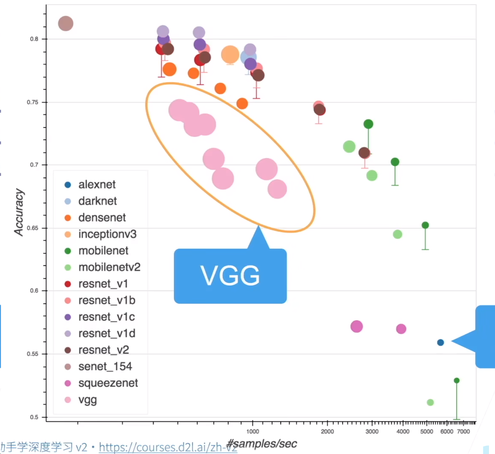
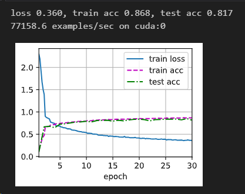
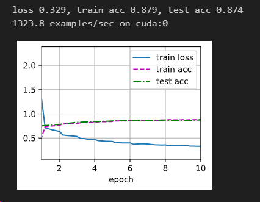
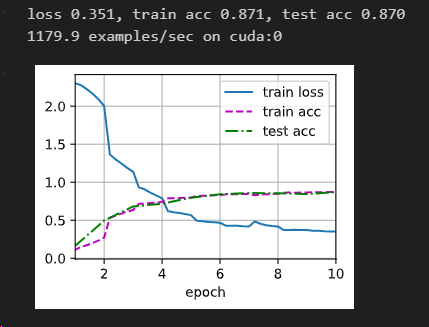
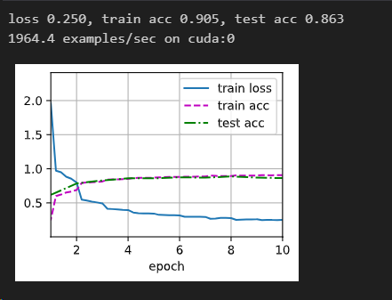
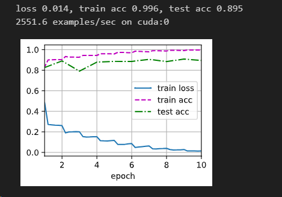

经典卷积神经网络的结构、区别和联系
1 简介
在处理图像分类问题上，卷积操作有着多层感知机所不具备的能力。比如：减少了学习的参数，增加了平移不变性和局部性。并且卷积神经网络在gpu上有着不错的加速效果。
自alexnet提出后，卷积神经网络开始进入人们的视野。用它来处理一些图像问题，实在是不二的选择。这里总结从“初出茅庐”的lenet，到“思想启蒙”的alexnet，再到并行操作的“googlenet”，最后到更深的resnet，介绍它们之间的结构区别和联系，并且给出相关实现代码，所有的测试都是根据fashionminsit数据集来进行的。
完整的可运行的代码存在我都仓库中。https://github.com/Guoxn1/ai。
如果你只是想简单了解一下，那下面这个图就够了。
2 图像的基本操作及参数用途
简单提一下，具体内容不再赘述，只列举和下面相关的。
2.1 卷积和池化
最基本的两个操作，卷积用来提取特征，池化用来减少计算量，防止过拟合。
卷积”操作的思想 采用一个较小的卷积核，例如 3×3 的矩阵，来对图像特征进行提取。这样做可以增加参数的共享，保留局部位置信息，平移不变性。
池化对卷积层中提取的特征进行挑选，减少随着神经网络变深、结点数变多而带来的巨大计算量。
2.2 kernel_size
较小的kernel_size提取更小的特征，建议使用单数。
2.3 padding
（1）解决图像经过卷积操作后图像缩小的问题
（2）图像不进行padding的话，边缘处像素只会进行一次卷积操作，而中间的像素点则会进行多次卷积操作，这样边缘像素的信息就会有损失
2.4 stride
设置的步长（Stride）来压缩一部分信息，或者使输出的尺寸小于输入的尺寸， 毕竟整个卷积的过程其实就是信息利用和信息损失的过程。
3 经典卷积神经网络结构、区别和联系
3.1 lenet（卷积神经网络）
都说alennet贡献很大，是兴起的源头，但是其实lenet比alexnet早了20年。主要还是算力没跟上，然后中间学术界和工业界更偏向于机器学习那一套。
lenet的结构：

pytorch实现：
1 | |
在fashionminsit的准确率和损失，以及每秒处理的图像：

我们主要关注这三个参数：train_loss,test_loss,examples/sec。
3.2 alexnet（深度卷积神经网络）
把alexnet比作“文艺复兴”一点都不为过，当所有牛掰的基于核的算法对图像处理力不从心的时候，是alexnet站了出来。
AlexNet和LeNet的设计理念非常相似，但也存在显著差异。
- AlexNet比相对较小的LeNet5要深得多。AlexNet由八层组成：五个卷积层、两个全连接隐藏层和一个全连接输出层。
- AlexNet使用ReLU而不是sigmoid作为其激活函数。
- 存在dropout函数来应对参数过多可能产生的过拟合

1 | |

处理的速度显著减少了，但是准确率确实上了一些，0.87。
我这里是笔记本端的 4060，不同型号可能存在不同的差异。
3.3 vgg（使用块的网络）
与AlexNet、LeNet一样，VGG网络可以分为两部分：第一部分主要由卷积层和汇聚层组成，第二部分由全连接层组成。

vggnet定义了一个块的东西，这个块实现了卷积和池化操作。
并且这个块就是alexnet中3*3卷积层的封装，含有不同数目的块的vgg网络又被命名为vgg11，vgg16等，这里代码实现vgg11。
VGG神经网络连接的几个VGG块（在vgg_block函数中定义）。其中有超参数变量conv_arch。该变量指定了每个VGG块里卷积层个数和输出通道数。全连接模块则与AlexNet中的相同。
原始VGG网络有5个卷积块，其中前两个块各有一个卷积层，后三个块各包含两个卷积层。 第一个模块有64个输出通道，每个后续模块将输出通道数量翻倍，直到该数字达到512。由于该网络使用8个卷积层和3个全连接层，因此它通常被称为VGG-11。
1 | |
时间比原来多了，相对来说精度也不错，而且每秒处理图片数目明显减少了。
3.4 nin（网络中的网络）
LeNet、AlexNet和VGG都有一个共同的设计模式：通过一系列的卷积层与汇聚层来提取空间结构特征；然后通过全连接层对特征的表征进行处理。 AlexNet和VGG对LeNet的改进主要在于如何扩大和加深这两个模块。可以想象在这个过程的早期使用全连接层。然而，如果使用了全连接层，可能会完全放弃表征的空间结构。 网络中的网络（NiN）提供了一个非常简单的解决方案：在每个像素的通道上分别使用多层感知机。
NiN的想法是在每个像素位置（针对每个高度和宽度）应用一个全连接层。 如果我们将权重连接到每个空间位置，我们可以将其视为1×1卷积层，或作为在每个像素位置上独立作用的全连接层。 从另一个角度看，即将空间维度中的每个像素视为单个样本，将通道维度视为不同特征（feature）。
NiN块以一个普通卷积层开始，后面是两个1×1的卷积层。这两个1×1卷积层充当带有ReLU激活函数的逐像素全连接层。 第一层的卷积窗口形状通常由用户设置。 随后的卷积窗口形状固定为1×1。
简单来说，nin就是把之前所有的全连接层给摒弃了，直接采用了1×1的卷积层来充当全连接层。
参数减少的原因是全连接层，假如有n×n图片输入，那么复杂度就是n^4，假如是应用1×1卷积层，一共输出k个通道的话，那么就是n*n*k,当然这种情况下可能这种卷积层比较多,假如是o个，那么复杂度就是n*n*k*o,显然要比原来的复杂度更低，但是损失的信息也会更多。

1 | |
这里面的结构和层数也是alexnet里面的，基本上照抄吧。

速度提了一些，但是准确率也下去了，基本和alexnet差不多。
听说在更复杂的数据集上有比较好的效果。
3.5 googlenet（含并行连结的网络）
v1: 9个inception块,每个inception块用四条有不同超参数的卷积层和池化层来抽取不同的信息。
v2:加入了batch normalization
v3:修改了inception块，替换5×5到3×3 、替换5×5为两个1×7和7×1，替换3×3为1×3和3×1
v4:使用残差连接
GoogLeNet一共使用9个Inception块和全局平均汇聚层的堆叠来生成其估计值。Inception块之间的最大汇聚层可降低维度。 第一个模块类似于AlexNet和LeNet，Inception块的组合从VGG继承，全局平均汇聚层避免了在最后使用全连接层。
结构更深也更加并行：


1 | |
结果：

最后可能出现了一点点过拟合了，总体的话正确率和alexnet和vgg差不多，速度是比他们要快一点，因为使用了很多结构来代替原来堆积的块。过拟合可能数据集还是太简单导致的，可能。
3.6 resnet（残差网络）
我觉得残差没有差啊，应该翻译成相加网络感觉更通俗一点。
和vgg有点像，和google也有点像，GoogLeNet在后面接了4个由Inception块组成的模块。 ResNet则使用4个由残差块组成的模块。
然后后面都是用的nin的全局池化代替全连接层。


速度很快啊，而且训练集居然达到了99，哈哈哈，测试集没上来，可能是欠拟合了。

总的来说吧，所有后面的网络都和alexnet有点关系，可以说alexnet是这次人工智能潮流的兴起点，然后后面改进的都各有千秋，从串联相加的vgg，到考虑使用1×1池化和全局池化来代替全连接层的nin，再到并行网络googlenet，最后到考虑历史效果，使得网络能更深且不产生梯度消失并且效果很不错的resnet。现在主流的应该就是googlenet-v3和resnet-34或resnet-50了，可以看开始的图，综合来看这两三个速度快，准确率高。